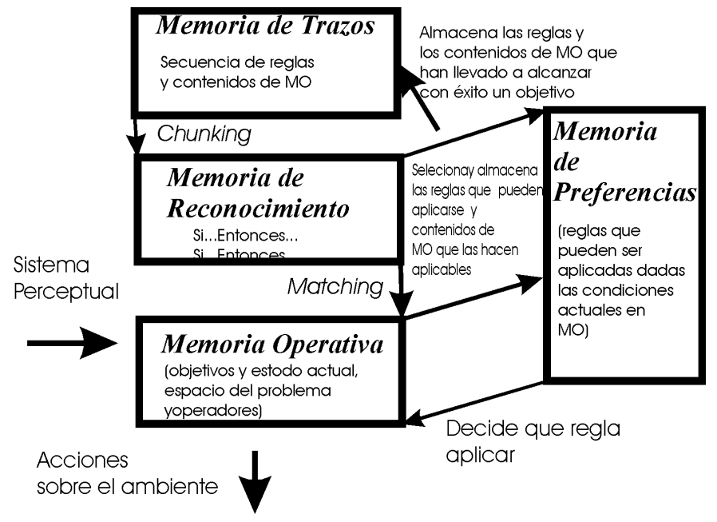

SOAR
La mayor aportación teórica de NEWELL y SIMON es la regla de producción. La aportación más importante de estos autores fue la de demostrar que el sistema cognitivo humano (y artificial) puede ser descrito como reglas de producción. Una regla de producción es una estructura de conocimiento que consta de dos partes, una condición y una acción.
SI condición ENTONCES acción
Una regla de producción puede leerse como: Si una condición se cumple, entonces el sistema lleva a cabo una acción. Puede ser externa o interna al sistema. Las reglas de producción están almacenadas en Memoria a largo Plazo. Las condiciones son unidades de información almacenadas en la Memoria Operativa. La solución de un problema es el proceso por el cual se pasa del un estado inicial en el espacio del problema a un estado final (deseado). La solución se alcanza mediante la aplicación de unas reglas de producción, pasando por estados intermedios de una forma secuencial. Los conceptos fundamentales que Newell y Simon utilizan para describir su modelo son los siguientes:
1) Un objetivo es una situación a la que se desea llegar. En una tarea existen varios objetivos organizados en una jerarquía.
2) Un estado es una estructura de datos que define una situación en el camino para alcanzar el objetivo. En la resolución de un problema se suele hablar de un estado inicial, estados intermedios y estado final que es el objetivo.
3) Un operador es una función que transforma un estado en otro. Un operador es la acción que resulta de la aplicación de una regla.
4) El espacio del problema es el conjunto de estados y operadores que están disponibles para alcanzar el objetivo. Las dimensiones del espacio del problema pueden ser muy variables y dependen de la complejidad del problema.
En SOAR el procesamiento de la información ocurre en una estructura cognitiva como la siguiente:
La información entra en el sistema a través de los canales sensoriales y es almacenada en la Memoria Operativa temporal. En la MO están contenidos todos los datos de la solución del problema en un momento determinado. Contiene todos los objetivos, espacios del problema, estados y operadores. La información permanente está almacenada en la Memoria a Largo Plazo a la que se le llama Memoria de Reconocimiento para resaltar que la información almacena da en las condiciones de las reglas de producción son patrones que deben ser reco nocidas en los contenidos de la Memoria Operativa. En SOAR no se hace distinción entre Memoria Declarativa y Memoria Procedimental. Toda la información, declarativa y procedimental está contenida en las reglas de producción. Es posible añadir conocimiento a la Memoria a Largo Plazo, pero no modificarla o eliminarla. Dependiendo de los contenidos de la Memoria operativa, se recupera información de la Memoria a Largo Plazo y se almacena en la Memoria de Preferencias. Son procesadas por un proceso de Decisión para determinar que contenidos de la Memoria Operativa son modificados. Existe además una Memoria de Trazos donde se almacena la información que va siendo recuperada de la Memoria a Largo Plazo. Está información es utilizada para descubrir patrones que permitan almacenar nuevas reglas de producción en la Memoria a Largo Plazo. En SOAR la información permanente está almacenada en forma de Reglas de Producción. Las condiciones de las reglas de producción que están almacenadas en la MLP son comparadas (matching) con los contenidos de la Memoria Operativa. Si una regla cumple su condición, la regla coloca su acción en la memoria de Preferencias. Las acciones pueden ser de dos clases, actuaciones directas sobre el ambiente o modificaciones en los contenidos de la Memoria Operativa. En ambos casos, suponen una modificación en los contenidos de la MO puesto que estos contenidos son, en gran parte, lo que el sistema perceptual capta del ambiente. En SOAR todas las reglas que se cumplen se colocan en la Memoria de Preferencias y a cada acción se le asigna un ‘valor de preferencia’. Permite a un Proceso de Decisión elegir cual ejecutar primero.
A veces que en la Memoria de Preferencias hay varias acciones que pueden llevarse a cabo y no hay forma de elegir entre ellas. Entonces se llega a una situación de impasse. El conocimiento almacenado en la Memoria Permanente es de dos tipos. Problema nuevo, lo hace con reglas de producción generales que forman parte de la arquitectura. Nuevas reglas van siendo añadidas como resultado del aprendizaje. A través de un proceso llamado agrupamiento (chunking). La solución al impasse significa encontrar una acción que lo solucione. SOAR analiza cuales fueron las condiciones que llevaron al impasse y cual es la acción que lo ha solucionado, y crea una nueva regla con esa condición y esa acción. Esta es añadida a la Memoria Permanente. El impasse no se produce y no es necesario generar un nuevo subobjetivo. En SOAR todas las reglas que cumplan su condición por tener la Me moria Operativa la información que requieren se activan en paralelo. Sin embargo, la activación de las reglas no lleva a su aplicación inmediata. Si en la Memoria de Preferencias las reglas activadas tienen asociados diferentes valores de preferencias es posible elegir que regla se aplicará.